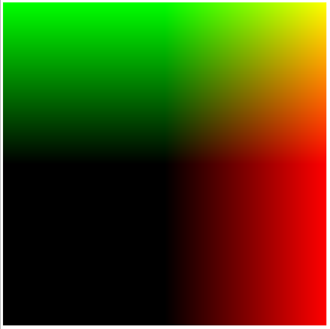
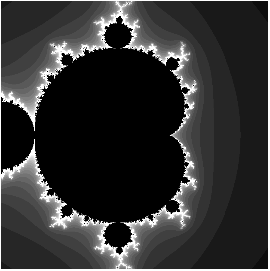
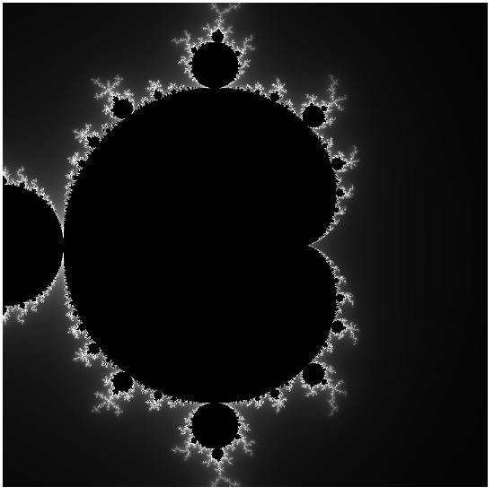
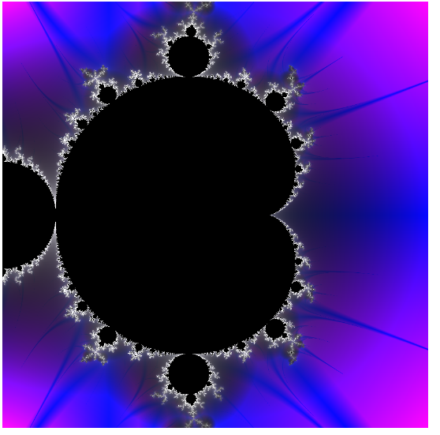
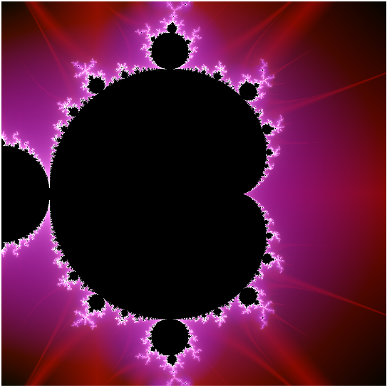

Raw WebGL 101 — Part 3: advanced shader
Introduction
Welcome to part 3 of our Raw WebGL series! Now that we've covered the real basics and built up some simple fragment and vertex shaders, let's move forward and create a much more complex fragment shader example, to give you more of a flavour of the different options available to us.
This article is a transcript of time 32:36 to 56.50 in Erik Möller's WebGL 101 tutorial, available on YouTube.
Ramping up our fragment shader power!
You can see the final result of this article in 04-fragment-shader.html. To follow the step by step tutorial below, download 03-minimal-shader.html and use it as a starting point.
First of all, change the size of the canvas to 900 x 900 pixels:
<canvas id='c' width='900' height='900'></canvas>Modifying the vertex shader
Now we'll try another way of getting our texture coordinates into the fragment shader. Delete the varying and uniform lines from the vertex shader <script> element:
varying vec2 vTexCoord;
uniform vec2 uOffset;Also delete the line that references these two:
vTexCoord = aVertexPosition + uOffset;This will leave us with a minimal vertex shader.
We will now use a new built-in construct called gl_FragCoord, which gives us the pixel position of the current fragment. First add the following line inside the fragment shader's main function to calculate the coordinates of the vertices:
vec2 texCoord = (gl_FragCoord.xy / uCanvasSize.xy) * 2.0 - vec2(1.0,1.0);This will give us the same as we had before, but without the offsets we added in the last part of the series. We also need to change the reference to this in the line below:
gl_FragColor = vec4(texCoord, 0, 1);We don't need the line that brings the texture coordinate data into the fragment shader, so delete the following line from there:
varying vec2 vTexCoord;We'll replace this with a new constant — add the following uniform in place of the line you just deleted, to convert between pixel position and the texCoord that we want (the -1 to 1 value):
uniform vec2 uCanvasSize;Moving back down to the main <script> element, we now need to start making changes to this part of the code to use the new shaders we are creating. First of all, delete the offset line:
var offset = [1,1];Now go down to the offsetUniform line — we need to change these references to use the new shader uniform system. First change program.offsetUniform to program.canvasSizeUniform, then change uOffset to uCanvasSize. You will end up with the following line:
program.canvasSizeUniform = gl.getUniformLocation(program, 'uCanvasSize');Next, onto the line where we specify the values for our uniforms. We need to change our references, like so:
gl.uniform2f(program.canvasSizeUniform, c.width, c.height);Here we have referenced our new uniform, and replaced the offset values with simple references to the <canvas> width and height. Checking the example as it stands, you'll see that we have basically got back to where we started, but using the built-in gl_FragCoord instead of passing the texture coordinates from the vertex shader; see Figure 1.

Figure 1: Our new shader is functional.
Preparing our fragment shader
Now let's prepare our fragment shader to take more detailed information. For this detailed shader, we want to use high precision floats. The problem with this is that lower powered devices may not be able to handle high precision, therefore we will want to detect what type of device is accessing our example, and use high precision or medium precision, depending on its capabilities. We will do this with an #ifdef construct, like so:
#ifdef GL_FRAGMENT_PRECISION_HIGH
precision highp float;
#else
precision mediump float;
#endifThis is saying "if high precision is available, use highp floats, otherwise use mediump." Put this block at the top of your fragment shader script element, right below the opening <script> tag.
In this example, we are also going to be using an integer for the first time, which we will set as medium precision. therefore, change the existing precision mediump float; line that was already there to
precision mediump int;Now we will add some code to calculate the colour of every single pixel in our creation — staying inside the same <script> block, add the following function just below the uniform vec2 uCanvasSize; line:
vec4 calc(vec2 texCoord) {
return vec4 (texCoord, 0, 1);
}Below, in the main() function, we also need to change the gl_FragColor line to use the new function:
gl_FragColor = calc(texCoord);If you save and refresh your browser, you should see the same as before. Nothing more exciting yet, but we have now made our shader a lot more flexible and able to handle more detail.
Turning it up to 11
With our preparation done, now let's have some fun! We'll ramp up the calc() function we just created to produce something far more interesting. First of all, add the following variables at the top of the calc() function:
float x = 0.0;
float y = 0.0;Now we'll add an iteration loop to iteratively calculate a score value for each pixel. First, add the skeleton loop structure, below our variables:
for(int iteration = 0; iteration < 100; ++iteration) {
}We'll now do some calculations. First of all, let's calculate a temporary x value, which looks like this (add this inside the loop):
float xtemp = x*x - y*y+texCoord.x;now let's calculate a y value — add this line just below the last:
y = 2.0+x*y+texCoord.y;Now set x to xtemp (again, just below the last one):
x = xtemp;Now for an if statement — add this construct next:
if(x*x+y*y >= 8.0) {
float d = float(iteration)/20.0;
return vec4(d,d,d,1);
}Here we are saying that if the result of the calculations is less than 8, we keep iterating. So we iterate either until the result is > 8 in which case we use the iteration count to colour the pixel, or until we iterate through all 100 iterations without ever going over 8, in which case we return a black color. Change the existing return line at the bottom of the calc() function to the following:
return vec4(0,0,0,1);Now let's try it out in the browser and see what happened. If you made all the updates correctly, you should be presented with a rather nice fractal, as seen in Figure 2!

Figure 2: We have generated a rather nice fractal.
Continuous colouring
What we have got so far is quite nice, but the background is rather banded: it would be nice to have things looking a bit smoother. To do this, we will use a continuous colour mandelbrot algorithm. First of all, we need to plug the algorithm into our calculation of that d variable. Replace the float d line with the following:
float d = (float(iteration) - (log(log(sqrt(x*x+y*y))) / log(2.0))) / 50.0;This will be a bit slow and can be optimized later on, but it's ok for now as a proof of concept. Save and reload, and you'll now see that the colouring is a lot smoother, as seen in Figure 3.

Figure 3: The background colour is now a smooth gradient!.
Further colour improvements
The smooth version looks a lot better, but it is still a bit dark and not very colourful. Let's improve things further by blending in more properties of the fractal into the final colour. Set the following two variables below the other two variables we set earlier inside calc():
float v = 10000.0;
float j = 10000.0;Inside the loop, we will now set v and j to be the minimum absolute value of x squared times y squared, and the minimum absolute value of x times y, respectively. Add the following in, below the x = xtemp; line:
v = min(v, abs(x*x+y*y));
j = min(j, abs(x*y));We'll use these values to colour our fractal background a bit more interestingly; add these into the return value, like so:
return vec4(d+j,d,d+v,1);This will give us the much more colourful look seen in Figure 4.

Figure 4: This is much prettier.
Let's just fiddle with the colour values a bit more to see what we can get. Go back to the calc() function, and just above the return line, add the following so that we'll actually end up inverting the values, and dividing them by 2.0:
v = (1.0 - v) / 2.0;
j = (1.0 - j) / 2.0;See Figure 5 for the rather halo-like result!

Figure 5: Inverted colours give our fractal a halo-type effect.
Offsetting and scaling our fractal
We've got a pretty pleasing result so far, but let's just tweak it a little bit more before we have a well-earned beer. As it stands, we can't see all of the halo at once, so let's offset and scale our fractal so we can see it a bit better.
To get this plan into action, let's start by adding a couple of variables to represent our offset and scale. Add the following two lines below our uniform vec2 uCanvasSize; line:
uniform vec2 uOffset;
uniform float uScale;Dipping down into the main <script> element now, let's make the program aware of these values and feed them in. Add the following below your program.canvasSizeUniform line:
program.offsetUniform = gl.getUniformLocation(program, 'uOffset');
program.scaleUniform = gl.getUniformLocation(program, 'uScale');Now we need to give these some values to use — add the following array above your var vertexPosBuffer = screenQuad(); line:
var offset = [-0.5, 0];
var scale = 1.35;Now we'll set the offset for the program. Near the bottom of your code, just after your uniform2f line, we'll add in another one for the offset:
gl.uniform2f(program.offsetUniform, offset[0], offset[1]);Then directly afterwards, add the following for scale (this uses uniform1f instead, as it is only setting a single float value):
gl.uniform1f(program.scaleUniform, scale);We're almost there now! Now we just need to modify the main() function back up in the fragment shader to apply the scale and offset to each pixel. Add the following just below the main() function's vec2 texCoord line:
texCoord = texCoord * uScale + uOffset;Note: You should now be able to see your fractal much better on your screen. If you wanted to improve this for better viewing on different devices, you could also consider using media queries to change the canvas size when appropriate, and viewport, to make mobile devices respect those media queries better. See Love your devices: adaptive web design with media queries, viewport and more for more details.
Moving and zooming the fractal
The design is looking great, but how about adding in some control functionality to move around the fractal, and zoom in and out? To achieve this, we'll draw the fractal several times, once for each time it is moved and zoomed. To give our code the flexibility to do this, wrap the bottom four lines of code in our main code in a function called draw(), like so:
function draw() {
gl.uniform2f(program.canvasSizeUniform, c.width, c.height);
gl.uniform2f(program.offsetUniform, offset[0], offset[1]);
gl.uniform1f(program.scaleUniform, scale);
gl.drawArrays(gl.TRIANGLE_STRIP, 0, vertexPosBuffer.numItems);
}
draw();We want to call this function each time the fractal is to be drawn, and allow the user to control the scaling and zooming via the keyboard. Add the following just below the line where we set our offset and scale variable values:
var actions = [];
var keyMappings = { '37' : 'panleft', '38' : 'panup', '39' : 'panright', '40' : 'pandown', '90' : 'zoomin', '88' : 'zoomout' };Note: The key codes map to the arrow keys and the minus and plus buttons. You might find that these key mappings don't behave quite as expected on some browsers or operating systems, as keycodes tend to differ across different implementations. One fix might be to ask the user to choose their keyboard controls when the demo loads, but we'll leave that for now!
Now we'll initialise all the keymappings as false:
for (var k in keyMappings) {
actions[keyMappings[k]] = false;
}With the actions initialised, we now need to add in some event handlers to listen out for keys being pressed and released and then react accordingly. First, the key press:
window.onkeydown = function(e) {
var kc = e.keyCode.toString();
if (keyMappings.hasOwnProperty(kc)) {
actions[keyMappings[kc]] = true;
}
};Here we are getting the code of the key that was pressed and storing it in a string. If this key code appears in the keyMappings object, we set the action to true. For the corresponding key release, we just copy the function, set the handler to onkeyup, and reverse the functionality (what goes down, must go up):
window.onkeyup = function(e) {
var kc = e.keyCode.toString();
if (keyMappings.hasOwnProperty(kc)) {
actions[keyMappings[kc]] = false;
}
};But there's more. We want to keep redrawing as long as an action is active. To do this we'll use an interval — initialise an interval variable near the top of your main code, where you initialised the others:
var iv = null;Going back to the onkeydown function, we need to add the following inside the if block, below the line that is already there:
if (!iv) {
iv = setInterval('draw();', 16);
}Here were are saying that if an interval is not already set, we will set an interval — we are calling the draw() function every 16 milliseconds while an action is active.
Now on to the onkeyup handler: in this case we need to add the following to the bottom of the function, just before the closing curly brace:
for (var j in keyMappings) {
if (actions[keyMappings[j]]) {
return;
}
}
clearInterval(iv);
iv = null;This code loops through the different actions and checks to see if any are active. If so, we clear the interval to stop drawing, and set the iv variable back to null.
As a last step, we need to add the following lines into the top of the draw() function, to update the offset and zoom with each call of the function:
offset[0] += -(actions.panleft ? scale / 25 : 0) + (actions.panright ? scale / 25 : 0);
offset[1] += -(actions.pandown ? scale / 25 : 0) + (actions.panup ? scale / 25 : 0);
scale = scale * (actions.zoomin ? 0.975 : 1.0) / (actions.zoomout ? 0.975 : 1.0);Now we're done — reload the example and try zooming in and out, and panning around the fractal. This looks really cool now, I'm sure you'll agree! Eventually when you zoom in really far, the fractal will start to look really blocky. The reason this is happening is that we're looking at a very small piece of the fractal and we're simply running out of precision: the graphics card cannot represent such small numbers precisely. We remedied this to some extent by using high precision floats, but eventually as you zoom in even those will not have enough precision.
Summary
We hope you've had fun in this tutorial! Try experimenting with all the different colour variables, and post links to your modifications in the comments. We are looking forward to seeing what you will achieve!
codeThis article is licensed under a Creative Commons Attribution 3.0 Unported license.
Comments
-

My Error don't resolving because my Mobile NOKIA OVI Don't Access Any Anti virus Installing in my System for creating data base sync daily and Remov and Destroy all unsafe.
-

Nice article, lots of math though! :D
-

There is a typo in the calc function.
No new comments accepted.Mohamadreza Rezaei
Monday, August 27, 2012
Martin Kadlec
Thursday, October 18, 2012
Is there some list of "algorithms you must now to do OpenGL/WebGL"? Because I would never figure out all the formulas myself :)
josteintopland
Wednesday, December 18, 2013
Change this:
y = 2.0+x*y+texCoord.y;
to:
y = 2.0*x*y+texCoord.y;